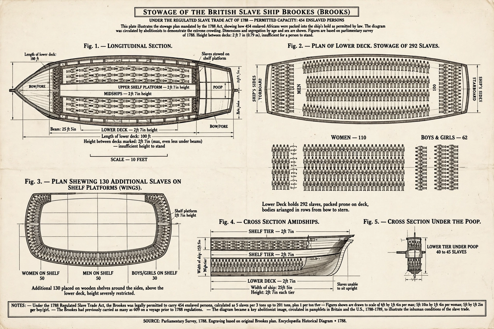

Transatlantic slave trade
From Wikipedia, the free encyclopedia

The transatlantic slave trade was the transportation by slave traders of enslaved African people, mainly to the Americas, between the sixteenth and nineteenth centuries. It was the largest forced migration in history: some 12.5 million Africans were embarked on slave ships, of whom about 10.7 million survived the Middle Passage to slavery in the Americas — principally Brazil and the Caribbean, with about 4% reaching North America. Portugal/Brazil, Britain, France, Spain and the Netherlands were the major carriers; African merchants and rulers supplied captives within systems of warfare and trade Europeans did not control but massively incentivised.
Operation
The 'triangular trade' — European goods to Africa, captives to the Americas, plantation produce (sugar, tobacco, cotton) to Europe — was in practice a web of bilateral trades. Mortality on the Middle Passage averaged 10–20% in the early centuries, falling below 10% by 1800; shipboard revolts were common (one voyage in ten, by some counts). The trade's profitability debates (Eric Williams' Capitalism and Slavery, 1944) continue, but its demographic and cultural consequences — Africa's population distortion, the African diaspora's creation — are not in doubt.
Abolition and memory
Denmark (1803), Britain (1807) and the US (1808) banned the trade; the Royal Navy's West Africa Squadron suppressed it for half a century while Brazil and Cuba imported illegally into the 1850s–60s. Emancipation followed piecemeal (British colonies 1834–38, US 1865, Brazil 1888). The trade's commemoration — UNESCO's Slave Route Project, museums at Liverpool, Nantes, Cape Coast — and reparations debates carry its unfinished accounting.